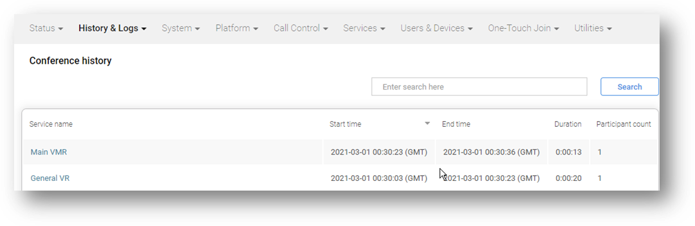

Suggested completion time: 20 minutes
Use section #4.2 and #5 of the lab sheet.
To create a VR:
Add a numeric alias to a VMR service:
Before you test, ensure you have waited 1 minute for the configuration changes to synchronise across all the nodes. Next, dial into the VR, enter the Conference Code (either as DTMF tones if connecting from a video endpoint or via the WebApp prompt if connecting via WebRTC) using the digits you configured as the numeric alias added to the other service. Finally, your call should transfer into the second service.
Whether you are using WebRTC or a traditional video endpoint, you will find the user experience from the client, and the admin experience via Infinity's GUI, to be different in both cases. Therefore, you should attempt connecting using both WebRTC and a standard SIP client, and keep an eye on what is happening in Live View and the Conference History CDR data.
Live View and the Conference History only shows service instances where clients establish a proper call leg:
When you have configured a VR, added a numeric alias to a VMR, and can then transfer from the VR to VMR, check your Infinity deployment to see how it compares with our screenshots and logs. For example, see below to compare the Conference History for a video endpoint and the administrator log entries that show the participant has been transferred.
NOTE: you will NOT see a conference history record for a VR service when using WebRTC, as this is merely an HTTP request. If you do not have access to an external SIP or H.323 client, you can use the SIP client on the Jumpbox to experience the in-call user experience.

NOTE: We have shown all the administrator log entries associated with the call and transfer, with the actual transfer event highlighted:
2021-03-01T00:30:03.926+00:00 edge 2021-03-01 00:30:03,926 Level="INFO" Name="administrator.conference" Message="Participant attempting to join conference." ConferenceAlias="sip:lobby@vc20-osl.pexip.net;transport=tcp" Participant="sip:user0041@192.168.199.118" Protocol="SIP" Direction="in" Remote-address="81.100.54.99" Participant-id="e5e6285b-ea31-4c49-aadf-abf5e98c367b" Registered="False" Location="DMZ"
2021-03-01T00:30:03.972+00:00 conf01 2021-03-01 00:30:03,972 Level="INFO" Name="administrator.conference" Message="Conference has been created." Conference="General VR" Service-tag="" Service-type="two_stage_dialing" Conference-ID="3deb24d1-ca56-451b-801c-a5cfb4706fc3"
2021-03-01T00:30:04.815+00:00 conf01 2021-03-01 00:30:04,815 Level="INFO" Name="administrator.conference" Message="Participant has joined." Conference="General VR" Service-tag="" Service-type="two_stage_dialing" ConferenceAlias="sip:lobby@vc20-osl.pexip.net;transport=tcp" Participant="sip:user0041@192.168.199.118" DisplayName="Chris RPD" Protocol="SIP" Direction="in" Vendor="Polycom RealPresence Desktop for Windows (3.10.4.72927)" Call-id="e0cfb169-5f417646-963dd6ff@192.168.199.118" Conversation-id="45807c58-246e-4128-a402-07b8ba1a7a32" Participant-id="e5e6285b-ea31-4c49-aadf-abf5e98c367b" Remote-address="81.100.54.99" Location="LAN" Licenses="1" Signaling-node="91.90.42.120" Signaling-location="DMZ" Media-node="10.247.180.201" Conference-ID="3deb24d1-ca56-451b-801c-a5cfb4706fc3" Proxy-node="91.90.42.120" Proxy-location="DMZ"
2021-03-01T00:30:20.740+00:00 conf01 2021-03-01 00:30:20,740 Level="INFO" Name="administrator.conference" Message="Participant transferred" Alias="12345" Conference="Main VMR" Service-tag="" Participant="sip:user0041@192.168.199.118" Call-id="e0cfb169-5f417646-963dd6ff@192.168.199.118"
2021-03-01T00:30:23.381+00:00 edge 2021-03-01 00:30:23,380 Level="INFO" Name="administrator.conference" Message="Participant attempting to join conference." ConferenceAlias="12345" Participant="sip:user0041@192.168.199.118" Protocol="SIP" Direction="in" Remote-address="81.100.54.99" Participant-id="b5fabf84-5055-42d2-8a37-9da9b672784e" Registered="False" Location="DMZ"
2021-03-01T00:30:23.419+00:00 conf02 2021-03-01 00:30:23,419 Level="INFO" Name="administrator.conference" Message="Conference has been created." Conference="Main VMR" Service-tag="" Service-type="conference" Conference-ID="88d59689-de62-4c04-b7de-8985e85b0de0"
2021-03-01T00:30:23.658+00:00 conf01 2021-03-01 00:30:23,658 Level="INFO" Name="administrator.conference" Message="Participant has disconnected." Conference="General VR" Service-tag="" Service-type="two_stage_dialing" ConferenceAlias="sip:lobby@vc20-osl.pexip.net;transport=tcp" Participant="sip:user0041@192.168.199.118" DisplayName="Chris RPD" Protocol="SIP" Direction="in" Vendor="Polycom RealPresence Desktop for Windows (3.10.4.72927)" Call-id="e0cfb169-5f417646-963dd6ff@192.168.199.118" Conversation-id="45807c58-246e-4128-a402-07b8ba1a7a32" Participant-id="e5e6285b-ea31-4c49-aadf-abf5e98c367b" Remote-address="81.100.54.99" Location="LAN" Licenses="1" License-type="port" Signaling-node="91.90.42.120" Signaling-location="DMZ" Media-node="10.247.180.201" Conference-ID="3deb24d1-ca56-451b-801c-a5cfb4706fc3" Proxy-node="91.90.42.120" Proxy-location="DMZ" Duration="18.844" Detail="None"
2021-03-01T00:30:23.718+00:00 conf02 2021-03-01 00:30:23,718 Level="INFO" Name="administrator.conference" Message="Participant has joined." Conference="Main VMR" Service-tag="" Service-type="conference" ConferenceAlias="sip:lobby@vc20-osl.pexip.net;transport=tcp" Participant="sip:user0041@192.168.199.118" DisplayName="Chris RPD" Protocol="SIP" Direction="in" Vendor="Polycom RealPresence Desktop for Windows (3.10.4.72927)" Call-id="e0cfb169-5f417646-963dd6ff@192.168.199.118" Conversation-id="45807c58-246e-4128-a402-07b8ba1a7a32" Participant-id="b5fabf84-5055-42d2-8a37-9da9b672784e" Remote-address="81.100.54.99" Location="LAN" Licenses="1" Signaling-node="91.90.42.120" Signaling-location="DMZ" Media-node="10.247.180.202" Conference-ID="88d59689-de62-4c04-b7de-8985e85b0de0" Proxy-node="91.90.42.120" Proxy-location="DMZ"
2021-03-01T00:30:23.823+00:00 conf01 2021-03-01 00:30:23,823 Level="INFO" Name="administrator.conference" Message="Conference has been stopped." Conference="General VR" Service-tag="" Service-type="two_stage_dialing" Duration="19.852" Conference-ID="3deb24d1-ca56-451b-801c-a5cfb4706fc3"
2021-03-01T00:30:36.153+00:00 conf02 2021-03-01 00:30:36,153 Level="INFO" Name="administrator.conference" Message="Participant has disconnected." Conference="Main VMR" Service-tag="" Service-type="conference" ConferenceAlias="sip:lobby@vc20-osl.pexip.net;transport=tcp" Participant="sip:user0041@192.168.199.118" DisplayName="Chris RPD" Protocol="SIP" Direction="in" Vendor="Polycom RealPresence Desktop for Windows (3.10.4.72927)" Call-id="e0cfb169-5f417646-963dd6ff@192.168.199.118" Conversation-id="45807c58-246e-4128-a402-07b8ba1a7a32" Participant-id="b5fabf84-5055-42d2-8a37-9da9b672784e" Remote-address="81.100.54.99" Location="LAN" Licenses="1" License-type="port" Signaling-node="91.90.42.120" Signaling-location="DMZ" Media-node="10.247.180.202" Conference-ID="88d59689-de62-4c04-b7de-8985e85b0de0" Proxy-node="91.90.42.120" Proxy-location="DMZ" Duration="12.435" Detail="Remote disconnect"
2021-03-01T00:30:36.290+00:00 conf02 2021-03-01 00:30:36,290 Level="INFO" Name="administrator.conference" Message="Conference has been stopped." Conference="Main VMR" Service-tag="" Service-type="conference" Duration="12.871" Conference-ID="88d59689-de62-4c04-b7de-8985e85b0de0"